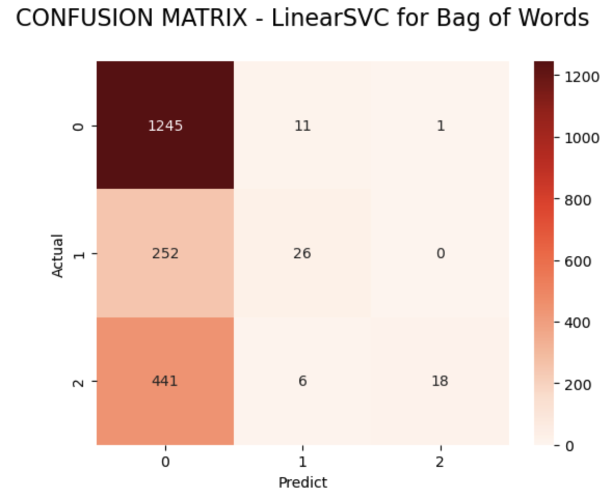
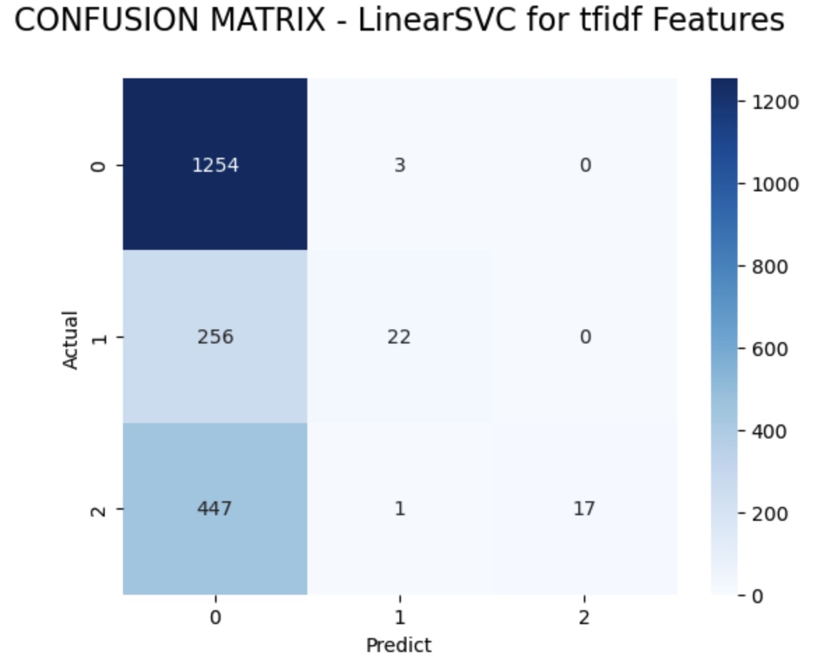
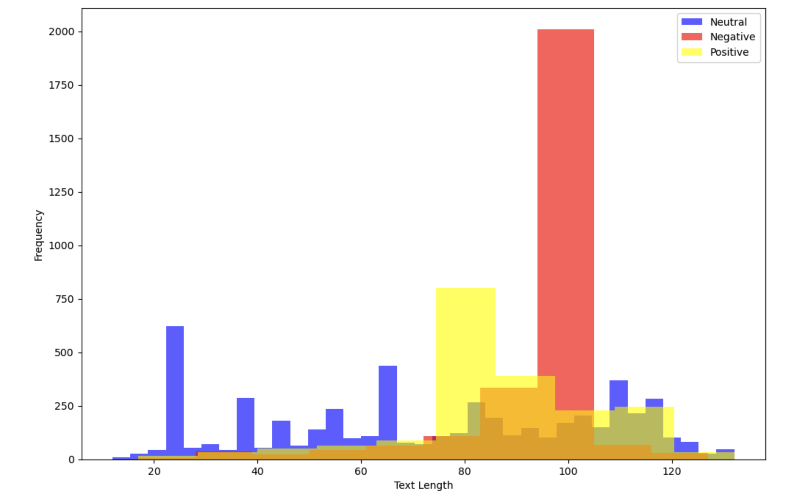
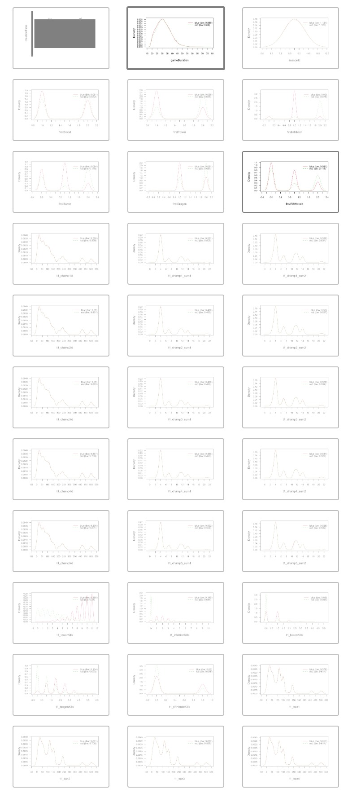
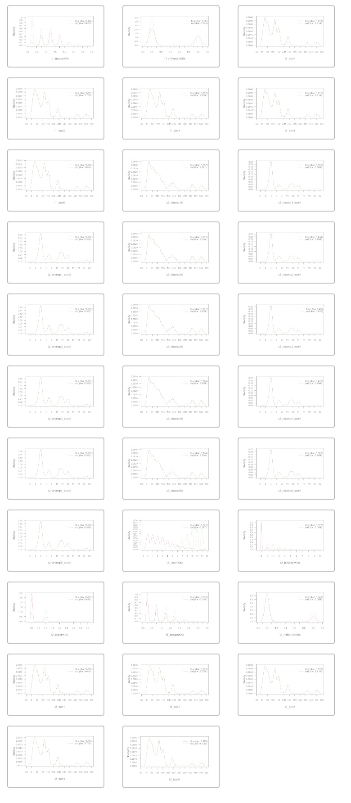
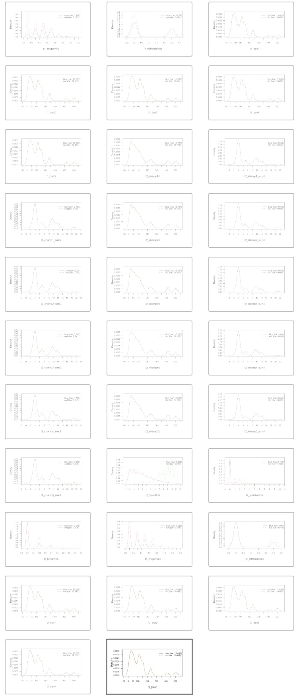

In this text data, we have to predict the number of positive, negative, and neutral reviews from 10000 tweets based on sentiments by using different classification models.
Firstly, we read the csv file about 10000 tweets of League of Legends which were gathered and cleaned last time. Then we noticed that there were still many symbols and urls which might affect our determination of the reviews. In order to eliminate these, I used some functions that can tokenize text. Also, I Removed the html strips and noisy text. In addition, I defined a function for removing special characters and Stemmed the text. Next, I set English stopwords and removed those stopwords. Finally, I applied these functions on text column.
All cleaned text data are set now. I used TextBlob to provide a simple API for diving into common natural language processing (NLP) tasks such as part-of-speech tagging, noun phrase extraction, sentiment analysis, classification, translation, and more. I added a column called label to show whether these 10000 tweets are positive, negative, or neutral. This is about the sentiment analysis so we can get people's subject views on League of Legends.
After that, in order to be convenient for data training , I used the numeric values -1, 0, and 1 to represent negetive, neutral ,and positive reviews separately. I also used value_counts() which is Sentiment count to get there are 5326 neutral reviews, 2724 negative reviews, and 1950 positive reviews. Then I Splited the training dataset for 8000 and the testing set for 2000 in order to normalize them. Next, I used two methods that are count vectorizer and Tfidf vectorizer to transform the training and testing text. As we know, count vectorizer is a great tool provided by the scikit-learn library in Python. It is used to transform a given text into a vector on the basis of the frequency (count) of each word that occurs in the entire text. Tfidf vectorizer works by proportionally increasing the number of times a word appears in the document but is counterbalanced by the number of documents in which it is present. Hence, words like 'this', 'are' etc., that are commonly present in all the documents are not given a very high rank. The main difference between the 2 implementations is that TfidfVectorizer performs both term frequency and inverse document frequency for you, while using TfidfTransformer will require you to use the CountVectorizer class from Scikit-Learn to perform Term Frequency. Then I Split the sentiment data to 1d arrays.
After all preparation are done, we can use naive bayes to model the dataset. Let's construct Multinomial Naive Bayes for count and tfidf features. Firstly, we train the model and fit the svm for count and tfidf features. Next, we model performance on test data to Predict the model for count and tfidf features. We get mnb_count_score is 0.6445 and mnb_tfidf_score is 0.6465. They are almost same. Then I print the classification report and plot two confusion matrices. To visualize them, I plot the following heatmaps for them.
 The following histogram shows the relationship between the frequency of neutral, negative, and positive texts and their length.
In the record data, I try to use R to do the naive bayes. We need to compare the relationship between the winner side and all other variables. Firstly, I read the csv file and define the winner varaible which includes the numeric values 1 and 2 as blue side and red side in order not to confuse the subsequent number values for the naive bayes.
Then I start to build the model. To begin with, I create train and test data sets for training the model and testing through spliting the data into training and testing data sets. The training set is 80 percent of the whole data sets and the testing set is 20 percent which are same as ones of the text data above. Then I get the probability of winner for blue and red in both training and testing sets.
After all the preparation is done above, we can start to model Naive Bayes Classification and predict that to form the confusion matrix. From the confusion matrix, we can calculate the misclassification is around 0.08343391. That means training model accuracy is around 0.91656609. It is not bad! Finally, I plot all the graphs of the relationship between the winner side and all other variables. The x-ais is about all other variables such as gameduration, season ID, first blood, etc. The y-axis is the density that can show the distibution of each value in x-axis. The full line represents the blue team and imaginary line represents the red team.
 Repeat the above steps. I can also model the testing data sets and get the confusion matrix for testing data. Then I can calculate the misclassification is around 0.06482433, so the testing model accuracy is better than the one of training set. Here are the graphs for the test model.
From the naive bays in python with labeled text data, we know that multinomial naive bayes model performing well compared to linear support vector machines. Still we can improve the accuracy of the models by preprocessing data and by using lexicon models like Textblob.
From the above illustration in R, misclassification in testing data is less than the one in training data. As a result, we can increase model accuracy in the train test while adding more observations. And from the graphs, the distribution is random. when they reach a certain value, the win rate will also reach the local peaks.